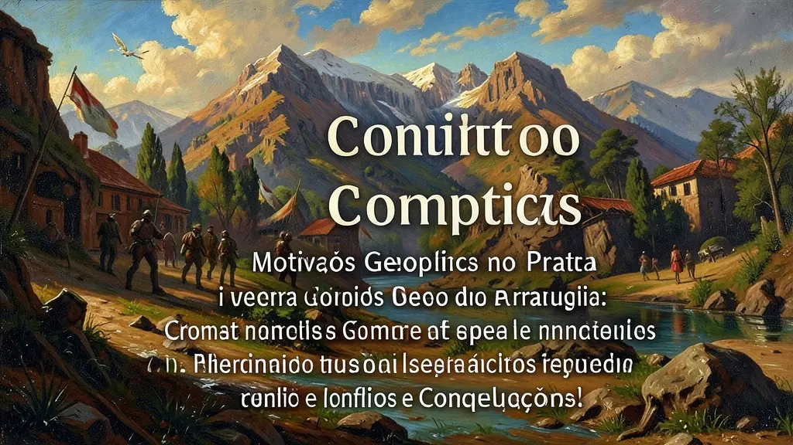
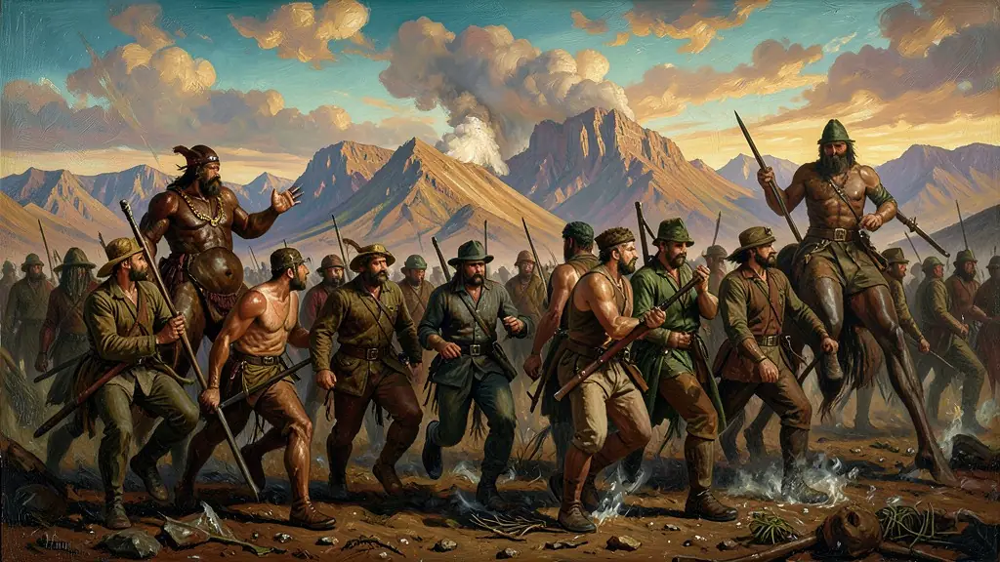
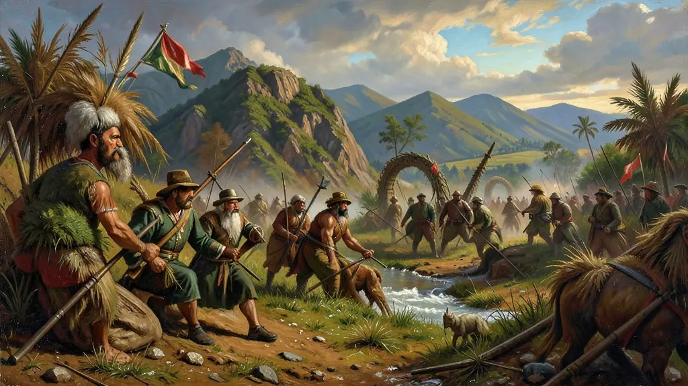

Capítulo 01
1. Motivações Geopolíticas no Prata
Para o Brasil Império, o rio Paraguai era a única estrada para chegar ao interior do Mato Grosso. Para o Paraguai, o controle da bacia era a sobrevivência comercial. O equilíbrio de poder na região era frágil e qualquer intervenção no Uruguai (nosso vizinho do sul) disparava um efeito dominó de alianças militares. A guerra foi o choque final dessas ambições territoriais.

Capítulo 02
2. Tríplice Aliança e Voluntários da Pátria
O Brasil não tinha um exército grande. D. Pedro II criou os 'Voluntários da Pátria', prometendo terras e dinheiro para quem lutasse. No entanto, o recrutamento foi forçado em muitos casos. Milhares de escravizados foram enviados no lugar dos filhos dos fazendeiros, com a promessa de alforria após a guerra. Isso criou um forte laço de união entre os soldados brancos e negros no campo de batalha.

Capítulo 03
3. Duque de Caxias e a Retomada
Após anos de derrotas e doenças (cólera e fome no front), Duque de Caxias assumiu o comando. Ele impôs disciplina e modernizou o exército. No episódio da 'Dezembrada' (1868), Caxias destruiu as defesas finais de López. Ele chegou a ocupar Assunção, mas recusou-se a caçar Solano López nas matas, por considerar a guerra tecnicamente vencida, deixando o fim do conflito para o Conde d'Eu.

Capítulo 04
4. O Desastre Paraguaio e a Questão Econômica
O Paraguai foi arrasado. Vilas inteiras sumiram e a infraestrutura do país foi destruída. Historiadores discutem se o Paraguai era uma potência industrial autossuficiente antes da guerra ou apenas um país agrário isolado. O fato é que após a guerra, o Paraguai tornou-se um dos países mais pobres da região, dependente de Brasil e Argentina.
Capítulo 05
5. A Volta dos Vencedores e a Queda do Trono
O Exército Brasileiro voltou da guerra coberto de glórias, mas desrespeitado pelo governo imperial, que não queria pagar pensões nem modernizar os batalhões. Os militares começaram a se ver como os 'verdadeiros defensores do país', acima dos políticos corruptos do Império. Disso nasceu o Positivismo militar e o desejo de uma República que valorizasse a competência técnica e a ordem social.
A Guerra do Paraguai (1864-1870) foi o maior conflito militar da América do Sul, envolvendo a Tríplice Aliança (Brasil, Argentina e Uruguai) contra o Paraguai de Solano López. Longe de ser apenas uma disputa por fronteiras, a guerra deve ser entendida como o resultado de um longo processo de formação das nações da bacia do Rio da Prata, onde a livre navegação dos rios era crucial para o comércio internacional. O custo humano para o Paraguai foi devastador, resultando na morte de grande parte de sua população masculina adulta.
Para o Brasil Imperial, a guerra teve consequências ambíguas. Embora vitorioso, o Império saiu do conflito com um exército fortalecido, politizado e abertamente descontente com a monarquia e a escravidão (devido ao convívio dos oficiais com o republicanismo platino). O endividamento financeiro astronômico junto à Inglaterra e o retorno dos soldados negros que exigiam liberdade para suas famílias aceleraram a crise do regime de D. Pedro II, unindo a questão militar à causa abolicionista.
O Enem frequentemente aborda a Guerra do Paraguai sob a revisão historiográfica moderna, que contesta a visão antiga da Inglaterra como 'vilã conspiradora' do conflito, preferindo focar nas tensões locais e no papel das elites sul-americanas. A guerra marcou o início do fim do Império no Brasil e consolidou a hegemonia brasileira na região, mas ao preço de uma destruição brutal dos vizinhos e de uma grave crise fiscal interna que pavimentaria o caminho para a República em 1889.
Fonte: DORATIOTO, Francisco. Maldita Guerra: Nova História da Guerra do Paraguai. São Paulo: Companhia das Letras, 2002.
Atividades interativas
Questões para fixar
A participação de escravizados na Guerra do Paraguai, através dos 'Voluntários da Pátria', trouxe uma consequência política importante para o Brasil. Qual foi?
Qual era a principal disputa geopolítica que levou à eclosão da Guerra do Paraguai?
Qual foi o evento que desencadeou a Guerra do Paraguai?
Qual foi a consequência mais devastadora para o Paraguai após a Guerra do Paraguai?
Qual foi o impacto da Guerra do Paraguai no Exército brasileiro?